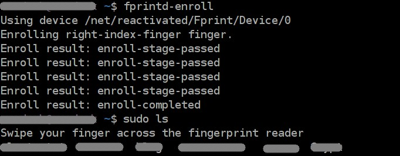

Setup the fingerprint reader on Lenovo X1 Carbon on Ubuntu 14.04
April 15, 2016
Following libraries are required to use the fingerprint reader.
sudo add-apt-repository -y ppa:fingerprint/fprint
sudo apt-get update
sudo apt-get install libfprint0 fprint-demo libpam-fprintdAfter that, the fprintd-enroll command can be used to enroll the right index finger. Try swiping a few times and you are done. From now on, executing a command using sudo with prompt you for your finger print:

For reference, see askubuntu